CMSC424: Query Processing — Query Plans, Pipelining, and Cost
Instructor: Amol Deshpande
1. Introduction: Query Processing Overview
In the previous module, we examined how data is physically stored — the storage hierarchy, file organization, tuple layouts, and index structures. We now turn to the next major topic: query processing. Given that data is stored on disk in blocks, how does a database system actually execute a SQL query? How does it decide which blocks to read, in what order, and how to combine the results?
The answer involves a sophisticated pipeline of components. When a user submits a SQL query, the database system processes it through several stages:
- Query Parser: resolves references, checks for syntax errors, and converts the SQL text into an internal representation (similar to relational algebra).
- Query Optimizer: examines the internal representation and determines the best way to execute the query — which indexes to use, which join method to employ, in what order to process the relations.
- Query Processor: reads data from the files, executes the chosen plan using the selected physical operators (joins, selections, aggregates), and produces the final result.
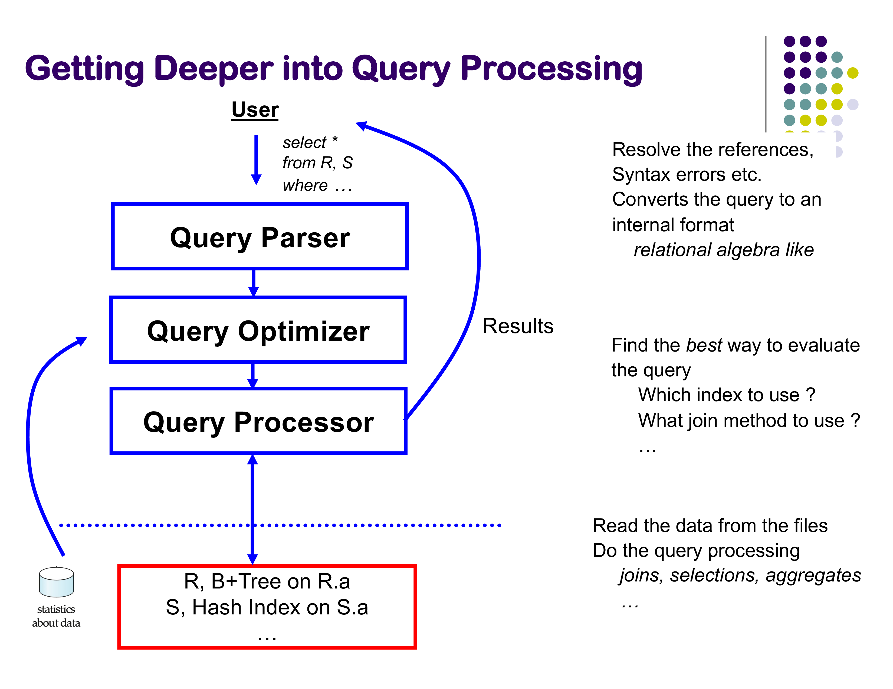
The optimizer relies on statistics about the data — such as the number of tuples in each relation, the distribution of values, and the available indexes — to make its decisions. The query processor interacts with the buffer manager, which is responsible for moving blocks between disk and memory, and through the buffer manager with the underlying storage layer.
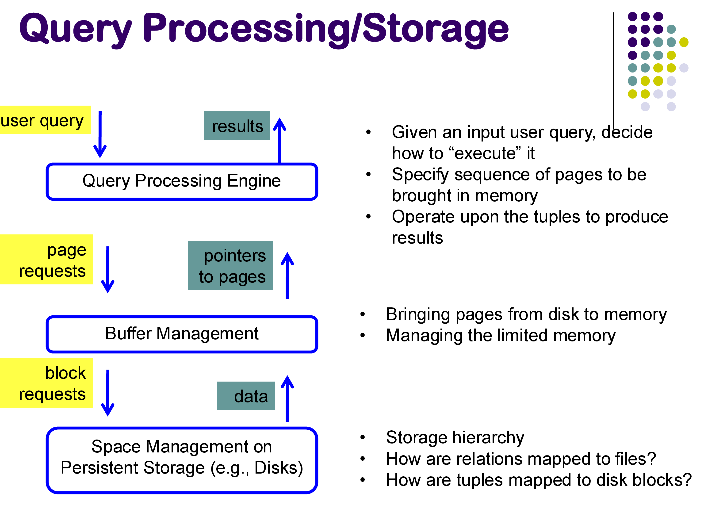
Throughout this module, we will use PostgreSQL as a running example. PostgreSQL is written in C but has a well-structured codebase that is relatively easy to follow. Its EXPLAIN command allows us to inspect the query plans it generates, making it an excellent tool for understanding how query processing works in practice.
The topics we will cover include:
- Query plans: what they are, how to read them
- Pipelining vs materialization: how operators pass tuples to each other
- Operator implementations: how selections, joins, and aggregates are actually executed
- External memory algorithms: what happens when data exceeds available memory
- Query optimization: how the system finds the best plan for a given query
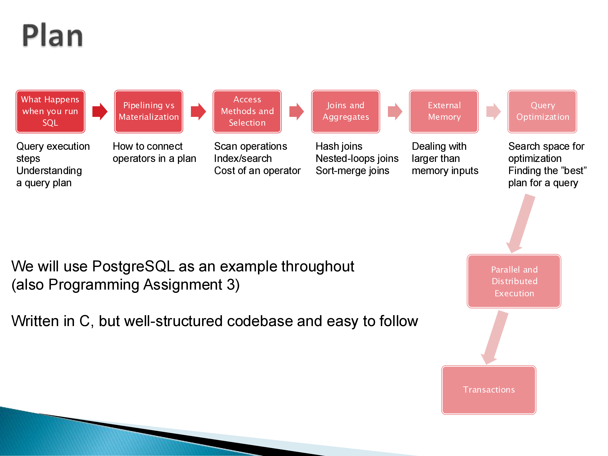
2. Query Plans
A query plan is a tree of operators that specifies exactly how a query will be executed. The base relations appear at the leaves (bottom) of the tree, intermediate operations occupy the internal nodes, and the final result emerges at the root (top).
A Simple Example
Consider the query:
SELECT salary
FROM instructor
WHERE salary < 75000The query plan for this might look like a chain of three operators: a scan operator that reads the instructor relation from disk, a selection operator that filters tuples where salary < 75000, and a projection operator that extracts only the salary attribute.
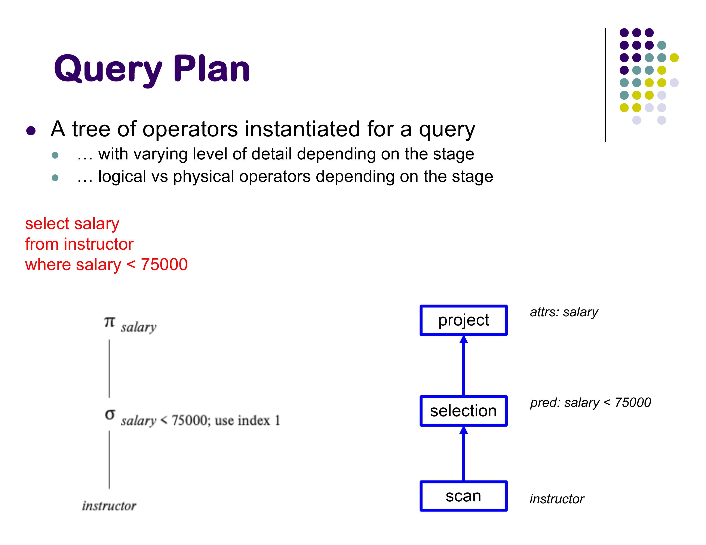
On the left side of the figure, the plan is expressed using relational algebra notation (π, σ). On the right, it is drawn as a tree of named operators — scan, selection, and project — with annotations indicating the specific parameters (the predicate for selection, the attribute list for projection).
A Join Example
For a more complex query involving a join:
SELECT name
FROM department NATURAL JOIN instructor
WHERE building = 'Watson'The logical plan shows a selection on department, a join with instructor, and a projection on name. But the physical plan that PostgreSQL actually generates looks quite different: it uses a Hash operator to build a hash table on department, followed by a Hash Inner Join operator that probes the hash table using instructor tuples. There is no explicit selection or projection operator — the selection is folded into the scan, and the projection happens implicitly.
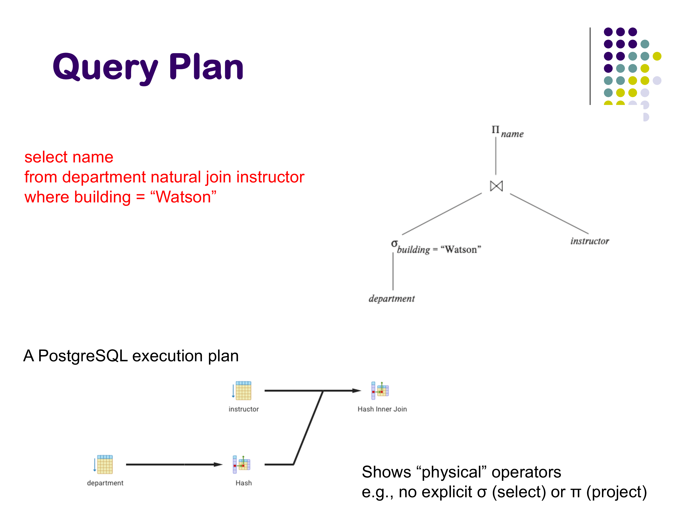
This illustrates an important point: the query plan that PostgreSQL outputs is a list of physical operators, which are the actual implementations the system will use. Being able to read these plans is an important skill — for simple queries, you should be able to understand what the system is doing by inspecting the EXPLAIN output.
Equivalent Plans and the Need for Optimization
The same query can often be evaluated in multiple ways. For example, consider a query joining three relations with a selection condition. The selection can be applied before or after the join, and the join order itself can vary. These are equivalent plans — they produce the same result but may have vastly different performance characteristics.
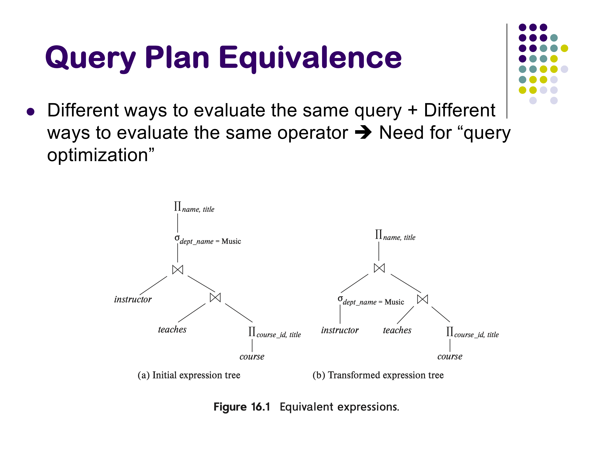
The existence of multiple equivalent plans is what motivates query optimization: the system must search through the space of possible plans and choose the one with the lowest estimated cost. We will discuss optimization in detail later in this module.
Plans in Pipeline-Style Systems
In systems like Apache Spark or MongoDB, query plans look slightly different. Because these systems use pipeline-style query languages (chains of filter, map, flatMap, reduceByKey operations), the query plan maps naturally to a linear chain of operators rather than a tree.
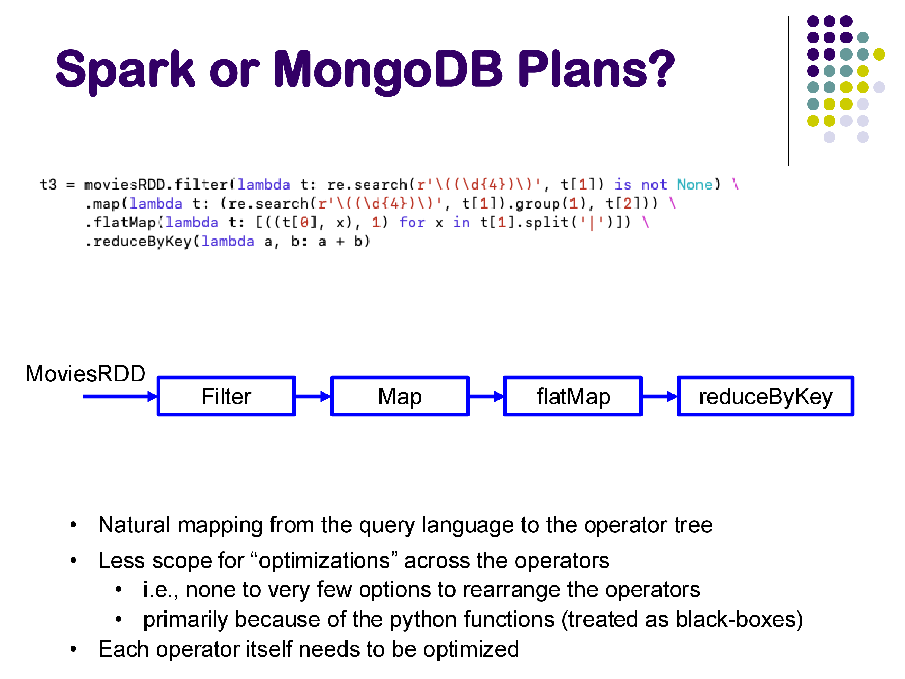
An important distinction is that in pipeline-style systems, there is less scope for rearranging operators across the pipeline, because the user-defined functions (lambdas) are treated as black boxes. Each operator itself still needs to be optimized, but the system has fewer opportunities for global plan restructuring compared to SQL-based systems.
3. Physical vs Logical Operators
A key concept in query processing is the distinction between logical operators and physical operators.
Logical operators correspond to the abstractions of the query language: Select (σ), Project (π), Natural Join (⋈), Outer Join, Aggregate, and so on. They describe what computation needs to happen.
Physical operators are the actual implementations in the database system’s code. They describe how the computation is carried out. Examples include sequential scan, index scan, hash join, sort-merge join, and hash aggregate.
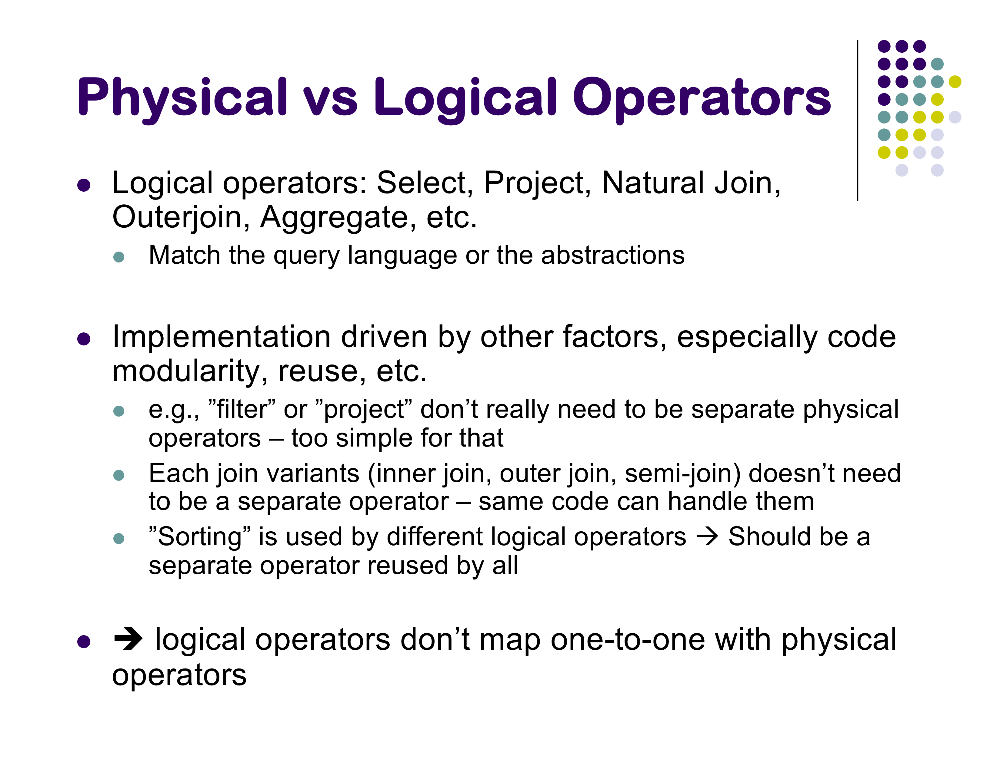
The mapping between logical and physical operators is not one-to-one, for several reasons:
Some logical operators are too simple for a dedicated physical operator. Filter (selection) and project are straightforward enough that they are often folded into other operators — for example, a scan operator might apply a filter as it reads tuples, rather than passing them to a separate filter operator.
Different join variants share the same physical implementation. Inner join, left outer join, right outer join, full outer join, and semi-join can all be handled by the same hash join code with minor modifications. Having a separate physical operator for each would create unnecessary code duplication.
Some physical operators serve multiple logical purposes. Sorting is used for sort-merge join, for
ORDER BY, for duplicate elimination (DISTINCT), and forGROUP BY. Rather than reimplementing sorting in each of these contexts, the database system has a single sort operator that is reused by all of them.
When you examine PostgreSQL’s EXPLAIN output, you are seeing physical operators. Understanding what each one does — and how it relates to the logical query — is essential for diagnosing performance issues.
4. Materialization vs Pipelining
Once we have a query plan — a tree of operators — we need to decide how tuples flow between operators. There are two fundamental approaches: materialization and pipelining.
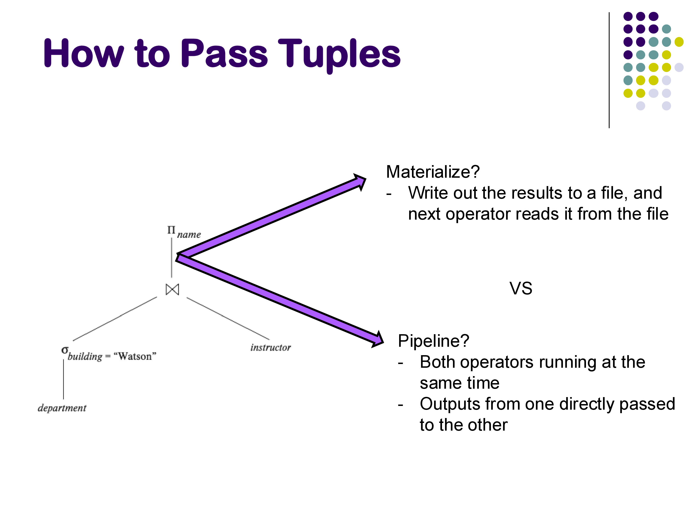
Materialization
In materialized evaluation, each operator runs to completion and writes its entire output to a temporary file on disk. The next operator in the plan then reads from that file. This process repeats from the bottom of the plan tree to the top.
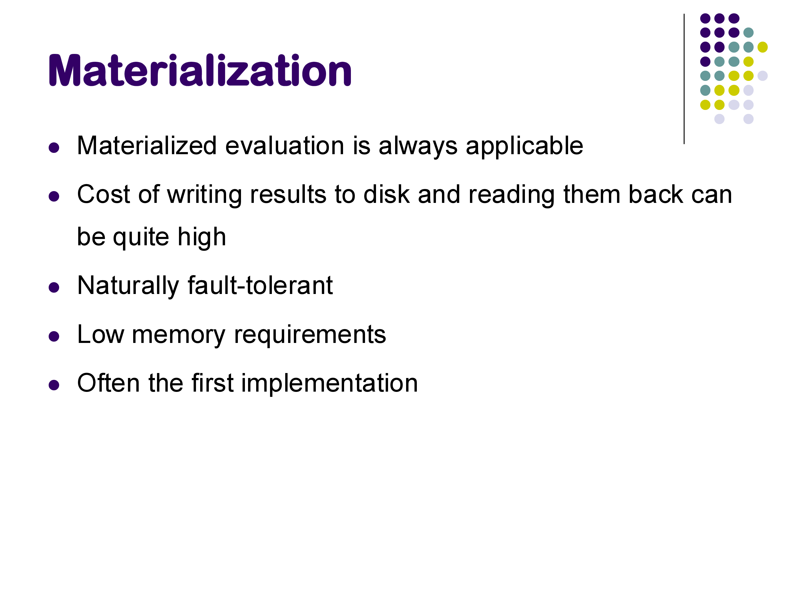
For example, a materialized join operator would open both input relations (which are files on disk), iterate through all tuple pairs looking for matches, write every matching pair to an output file, and close everything. The next operator in the plan would then open this output file and process it.
open R
open Out for writing
for each tuple r in R:
open S
for each tuple s in S:
if join_match(r, s):
write joined_tuple(r, s) to Out
close S
close R
close OutMaterialization has several advantages: it is always applicable (it works regardless of what the operators do), it has low memory requirements (only one operator’s data needs to be in memory at a time), and it is naturally fault-tolerant (intermediate results are on disk, so they survive crashes). For these reasons, materialization is often the first approach implemented when building a new database system.
The major disadvantage is cost: writing intermediate results to disk and reading them back can be extremely expensive, especially for multi-operator plans where every intermediate result is written and re-read.
Pipelining
In pipelined evaluation, multiple operators run simultaneously. Instead of writing intermediate results to disk, tuples flow directly from one operator to the next — as soon as one operator produces a tuple, it is immediately consumed by the next operator in the plan.
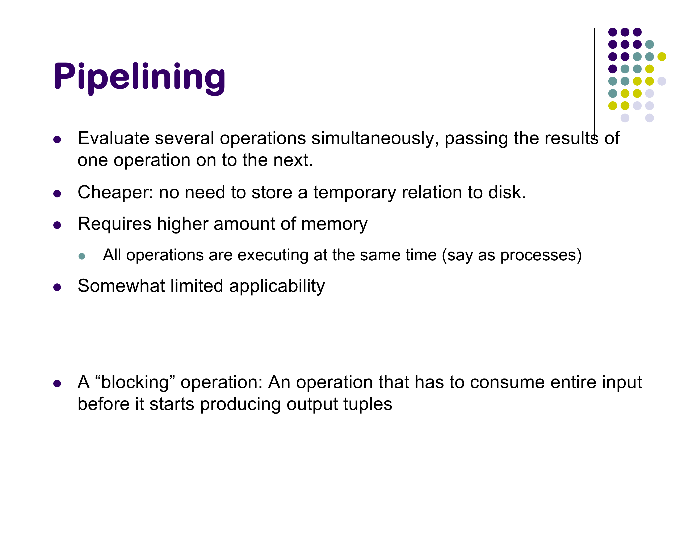
Pipelining is cheaper than materialization because it avoids the cost of writing and reading temporary relations. However, it requires more memory (all operators in the pipeline are active at the same time and each maintains its own state) and has limited applicability: some operators are blocking, meaning they must consume their entire input before they can produce any output. Sorting is the classic example of a blocking operator — you cannot output the first sorted tuple until you have seen all the input tuples. Aggregation (GROUP BY) is another example.
When a blocking operator appears in a query plan, it acts as a pipeline breaker — the pipeline before it must complete before the pipeline after it can begin.
5. The Iterator Model
The iterator model (also called the Volcano model or demand-driven pipelining) is the standard way that database systems implement pipelined execution. It is used by PostgreSQL and many other systems. Despite its association with pipelining, the iterator model is really a software engineering pattern — a way to make operators composable — and it works for both pipelined and materialized evaluation.
The Three Functions
In the iterator model, every physical operator implements exactly three functions:
Open(): Initialize the operator’s internal state. This includes creating any necessary data structures and propagating theOpen()call down to all child operators. Importantly,Open()should not process any data — it only sets things up.Next(): Return the next output tuple. This is where all the actual work happens. When a parent operator callsNext()on a child, the child may in turn callNext()on its children, and so on, all the way down to the base relations. Each call toNext()returns exactly one tuple, or a special end-of-file marker if there are no more tuples to return.Close(): Tear down the operator’s state, release resources, and propagate theClose()call to children.
How It Works: The Select Operator
Consider a simple selection operator. Its implementation in the iterator model looks like this:
def open(self):
Input.open()
def next(self):
while True:
t = Input.next()
if t is EOF:
return EOF
if predicate(t):
return t
def close(self):
Input.close()The Open() call propagates down to the input operator (which might be a scan of a base relation). The Next() call repeatedly asks the input for tuples, checks each one against the predicate, and returns the first one that passes. If the input is exhausted, it returns EOF. The Close() call propagates down to close the input.
Demand-Driven Execution
Execution in the iterator model is demand-driven: it is initiated from the top of the plan tree. When the user requests results, the topmost operator calls Next() on its child, which calls Next() on its children, and so on. Tuples flow back up the tree as each Next() call returns.
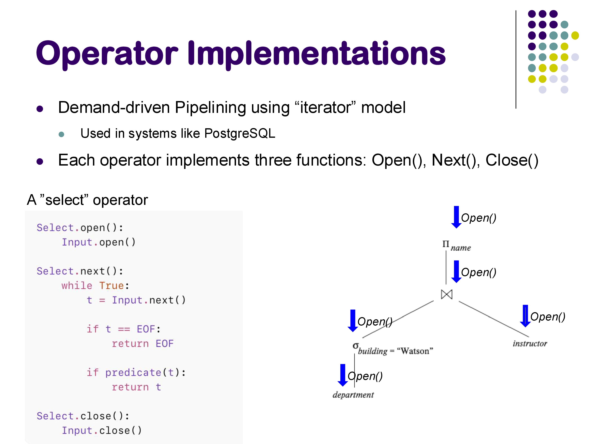
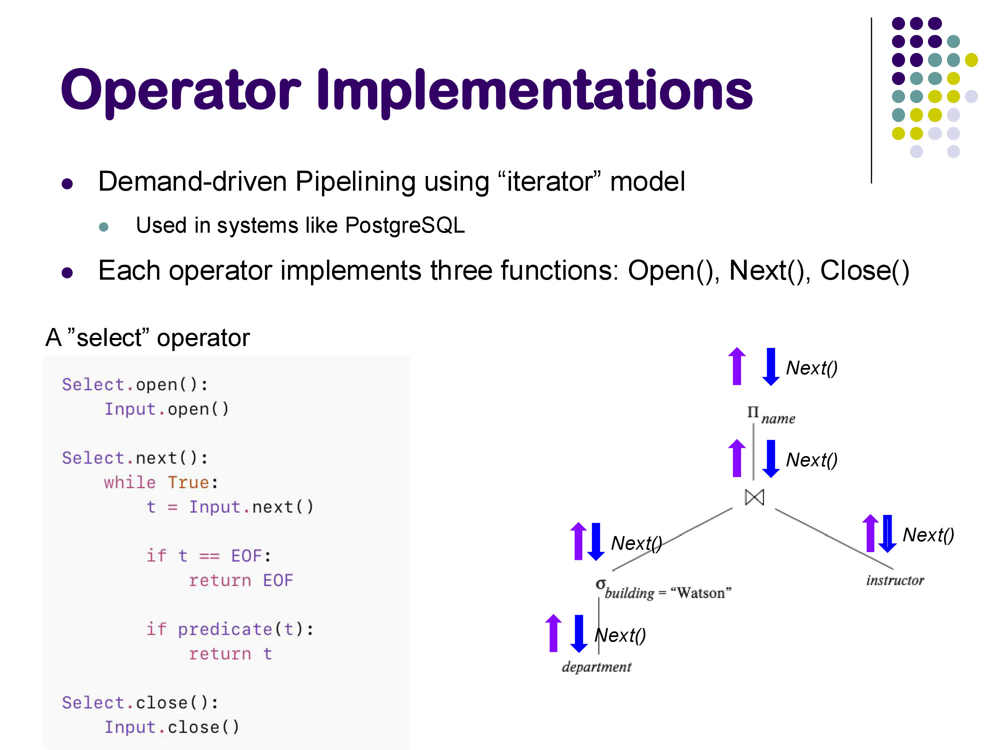
The Open() calls propagate from top to bottom during initialization. Then, during execution, Next() calls propagate downward (requesting tuples) and tuples flow back upward (returning results). This continues until the topmost operator returns EOF.
PostgreSQL follows a principle that data should not be touched during Open() or Close() — all data processing happens exclusively in Next() calls. This means that even operations like building a hash table (which might seem like initialization) happen during the first call to Next(), not during Open(). PostgreSQL also has an efficient approach to memory management: it allocates a single large memory context for an entire query plan, and when the query completes, it deallocates the entire context at once rather than individually freeing each data structure.
Producer-Driven Pipelining
An alternative to the demand-driven iterator model is producer-driven pipelining, where operators actively push tuples into output queues rather than waiting to be asked for them. Each operator has a run() method that reads from input queues and writes to output queues.
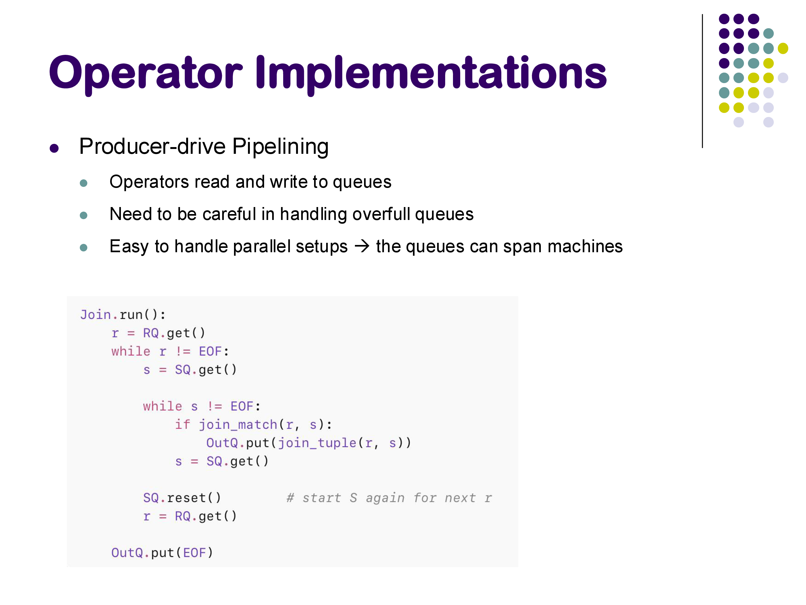
Producer-driven pipelining is particularly well-suited to parallel and distributed systems, because the queues can span machines — one operator running on machine A can write to a queue that is read by an operator on machine B. This is essentially how systems like Apache Spark work. The downside is that you need to be careful about handling overfull queues (backpressure).
Most traditional single-machine database systems (including PostgreSQL) use the demand-driven iterator model, while distributed systems tend to use producer-driven approaches.
6. Cost of Query Processing
In order to choose the best query plan from among many alternatives, the database system needs a way to estimate the cost of each plan. This cost estimation is crucial for query optimization.
What to Measure
The challenge is that “cost” in a modern computing environment is multidimensional. There are many competing factors:
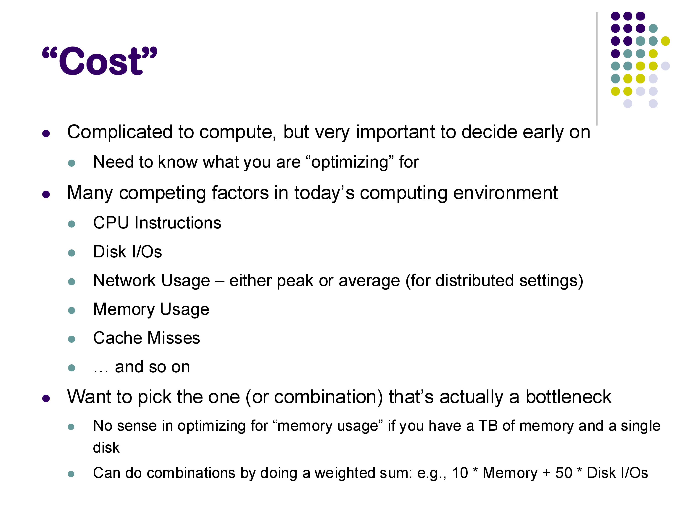
- CPU instructions: how much computation is required
- Disk I/Os: how many blocks must be read from or written to disk, and whether those accesses are random or sequential
- Network usage: relevant in distributed settings
- Memory usage: how much RAM the plan requires
- Cache misses: relevant for in-memory databases where disk I/O is not the bottleneck
The key insight is that you should optimize for the actual bottleneck. If you have a terabyte of memory and a single disk, there is no point in optimizing for memory usage — disk I/O is your bottleneck. If you are running an in-memory database, disk I/O is irrelevant but cache misses become critical. If you are in a distributed data center with a fast network, network cost may not matter, but CPU and disk will.
In practice, most database systems use a weighted combination of these factors. A typical approach might be something like:
\[\text{cost} = w_1 \times \text{CPU instructions} + w_2 \times \text{disk I/Os}\]
where the weights are tuned to the specific hardware environment. PostgreSQL’s EXPLAIN output shows both estimated and actual costs, reflecting this kind of combined metric.
Our Simplification
For this course, we will focus primarily on counting the number of disk blocks read as our cost metric, supplemented by CPU cost expressed as O(relation size) where appropriate. This is a simplification — in particular, it does not distinguish between random and sequential I/O, which can differ by a factor of 1000 on hard disks (though the gap is much smaller on SSDs).
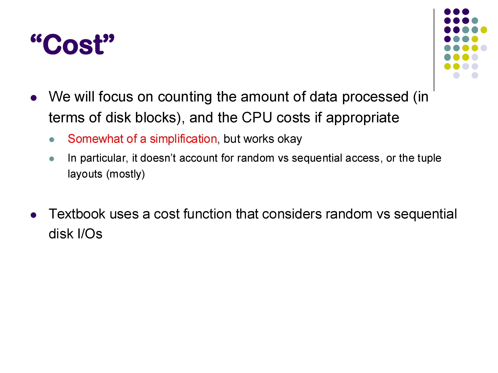
The textbook uses a more detailed cost function that separates random and sequential I/Os, reflecting the traditional focus on hard disk performance. We will generally use the simpler model, but it is important to understand that real systems must account for these distinctions.
One important point: cost estimates only need to be relatively correct — they must correctly rank alternative plans, but they do not need to predict the exact execution time. As long as the plan that is estimated to be cheapest is actually the fastest (or close to it), the optimization has done its job. This is why approximations are acceptable in cost estimation.